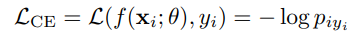
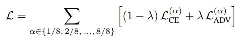
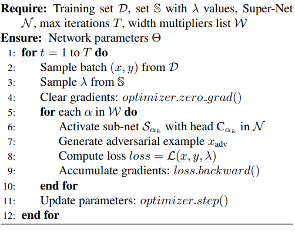

Abstract
Once-for-All (OFA) training enables a single super-net
to generate multiple sub-nets tailored to diverse deployment scenarios,
supporting flexible trade-offs among accuracy, robustness, and model-size
without retraining. However, as the number of supported sub-nets increases,
excessive parameter sharing in the backbone limits representational capacity,
leading to degraded calibration and
reduced overall performance. To address this, we propose SOLAR (Switchable
Output Layer for Accuracy and
Robustness in Once-for-All Training), a simple yet effective
technique that assigns each sub-net a separate classification head. By decoupling the logit learning process across
sub-nets, the Switchable Output Layer (SOL) reduces representational interference and improves optimization,
without altering the shared backbone.
We evaluate SOLAR on five datasets (SVHN, CIFAR-10, STL-10, CIFAR-100, and
TinyImageNet) using four super-net backbones (ResNet-34,
WideResNet-16-8, WideResNet-40-2, and MobileNetV2) for
two OFA training frameworks (OATS and SNNs). Experiments show that
SOLAR outperforms the baseline methods: compared to OATS, it improves accuracy of sub-nets
up to 1.26%, 4.71%, 1.67%, and 1.76%, and robustness up
to 9.01%, 7.71%, 2.72%, and 1.26% on SVHN, CIFAR-10,
STL-10, and CIFAR-100, respectively. Compared to SNNs,
it improves TinyImageNet accuracy by up to 2.93%, 2.34%,
and 1.35% using ResNet-34, WideResNet-16-8, and MobileNetV2 backbones (with 8 sub-nets), respectively.
Motivation
OFA frameworks (example: SNNs, OATS) successfully decouple intermediate statistics using switchable batch normalization (SBN / SDBN). However, the usual design still uses a single, shared output layer (classification head) for all sub-nets. Sub-nets of different widths produce feature distributions with very different statistics; forcing them to share the same logit head causes conflicting gradients and representational interference. This becomes more severe as the number of sub-nets grows.
Figure.1 Shared output layer forces incompatible sub-net feature distributions into one logit space.
Method — Switchable Output Layer (SOL)
Core Idea
Instead of using one shared classification head C for all sub-nets, SOL adds one head per sub-net: C_{αk}.
When training / evaluating a sub-net with width multiplier αk, the model uses only C_{αk}.
During backpropagation only the active head is updated. The shared encoder (backbone) remains shared.
Figure.2 OATS framework with Switchable Dual Batch Norm (SDBN) layers and Switchable Output Layer (SOL). Value of α indicates the width fraction for the corresponding sub-net in the backbone that is activated during training or inference. Convolutional layers have shared parameters whereas SDBN and SOL have separate parameters for each sub-net.
Formalization — Logits & Loss
For sub-net Sαk we compute features fαk = Sαk(x), and logits:
Standard cross-entropy:
where p = softmax(z)For hybrid adversarial training (OATS style), SOL supports the hybrid loss:

Here L_ADV is computed using PGD adversarial examples (e.g. 7-step PGD with ε = 8/255 as in the paper).
OATS-SOL Algorithm
Why SOLAR Outperforms?
- Decouples logit learning so each sub-net can adapt its output layer to its feature distribution.
- Reduces interference at the final layer, gradients no longer compete through a single shared head.
- Negligible inference overhead — only the active head is used per forward pass (FLOPs unchanged compared to baseline).
Experiments & Key Results
Datasets & Backbones used:
- Datasets: SVHN, CIFAR-10, STL-10, CIFAR-100, TinyImageNet
- Backbones: WideResNet-16-8, ResNet-34, WideResNet-40-2, MobileNetV2
- OFA Frameworks augmented with SOL: OATS (Once-for-All Adversarial Training and Slimming) and SNNs (Slimmable Neural Networks)
Results

Figure.3 Comparison of OATS and OATS-SOL on SVHN dataset using WideResNet-16-8 backbone packed with 8 sub-nets. OATS-SOL provides superior performance than OATS for all the sub-nets in terms of accuracy and PGD-7 robustness.

Figure.4 Comparison of OATS and OATS-SOL on CIFAR-10 dataset using ResNet-34 backbone (with 8 sub-nets). OATS-SOL provides superior performance than OATS for all the sub-nets in terms of accuracy and PGD-7 based robustness.

Figure.5 Comparison of OATS and OATS-SOL on STL-10 dataset using WideResNet-40-2 as backbone with 4 sub-nets.

Figure.6 Comparison of OATS and OATS-SOL on CIFAR-100 dataset using ResNet-34 as backbone with 4 sub-nets.

Table.1 Accuracy of SNN and SNN-SOL based Sub-Nets on CIFAR-10 for backbones packed with 16 Sub-Nets.

Table.2 Accuracy of SNN and SNN-SOL on CIFAR-100 for backbones with 8 sub-nets.

Table.3 Accuracy of SNN and SNN-SOL on TinyImageNet for backbones with 8 sub-nets.

Table.4 Parameter counts of SNN vs. SNN-SOL backbones packed with 8, 32, and 64 sub-nets for CIFAR-10 dataset.

Table.5 Identical FLOPs of SNN and SNN-SOL sub-nets (with different widths), show that SOL adds no training overhead.

Table.6 Performance of different sub-nets after fine-tuning.
Training & Evaluation Highlights:
- Adversarial training uses 7-step PGD (L∞, ε=8/255, step=2/255) for robustness evaluation — same as OATS baseline.
- Hybrid λ values used for training: sampled from S = {0.0, 0.1, 0.2, 0.3, 0.4, 1.0}.
- Optimization: SGD with momentum 0.9, cosine annealing LR; reported results are best-of-runs across seeds.
Conclusion & Future Directions
We introduce Switchable Output Layer (SOL) to enhance the performance and robustness of Once-for-All (OFA) training frameworks. SOL assigns independent classification heads to the sub-nets in the super-net backbone, which decouples their logit learning processes, mitigating the competition at the shared output layer—a bottleneck limiting the sub-net accuracy, robustness, and optimization. Extensive experiments on two different baseline methods: Once-for-All Adversarial Training and Slimming (OATS) and Slimmable Neural Networks (SNNs), across multiple datasets and diverse super-net architectures, demonstrate that incorporation of SOL consistently improves performance of sub-nets without introducing additional training overhead or complexity. SOL generalizes well, which highlights its potential as an effective enhancement for the OFA frameworks, encouraging flexible, scalable, and reliable deployment of specialized models across a wider range of devices and constraints. For future, we aim to extend SOL to more OFA frameworks and conduct large-scale evaluations on the ImageNet-1K dataset. In addition, we intend to study the impact of layer normalization on reducing representational interference across the sub-nets.
BibTeX
@inproceedings{tareen2026solar
title = {SOLAR: Switchable Output Layer for Accuracy and Robustness in Once-for-All Training},
author = {Tareen★, Shaharyar Ahmed Khan and Fan, Lei and Yuan, Xiaojing and Lin, Qin and Hu, Bin},
booktitle = {Proc. IEEE/CVF Winter Conf. on Applications of Computer Vision (Round 2 New Submission Acceptance Rate: 26.88%)},
year = {2026},
address = {Tucson, Arizona, USA},
}Website borrowed from NeRFies under a Creative Commons Attribution-ShareAlike 4.0 International License